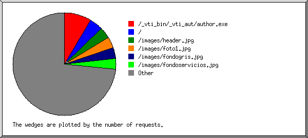

Web Server Statistics for tierrasegura.com Web Server Statistics for tierrasegura.com
Web Server Statistics for tierrasegura.com Web Server Statistics for tierrasegura.com(Go To: Top: General Summary: Monthly Report: Daily Summary: Hourly Summary: Domain Report: Organization Report: Failed Referrer Report: Referring Site Report: Search Word Report: Browser Report: Browser Summary: Operating System Report: Status Code Report: File Size Report: File Type Report: Directory Report: Request Report)
(Figures in parentheses refer to the 7-day period ending Mar 25
2005 at 7:29 AM).
Successful requests: 584 (41)
Average successful requests per day: 25 (5)
Successful requests for pages: 84 (10)
Average successful requests for pages per day: 3 (1)
Failed requests: 15 (0)
Distinct files requested: 59 (0)
Distinct hosts served: 27 (0)
Data transferred: 5.044 megabytes (508.594 kilobytes)
Average data transferred per day: 226.265 kilobytes (72.656 kilobytes)
(Go To: Top: General Summary: Monthly Report: Daily Summary: Hourly Summary: Domain Report: Organization Report: Failed Referrer Report: Referring Site Report: Search Word Report: Browser Report: Browser Summary: Operating System Report: Status Code Report: File Size Report: File Type Report: Directory Report: Request Report)
Each unit ( ) represents 2 requests
for pages or part thereof.
) represents 2 requests
for pages or part thereof.
month: #reqs: #pages: --------: -----: ------: Feb 2005: 96: 12:Busiest month: Mar 2005 (72 requests for pages).Mar 2005: 488: 72:

(Go To: Top: General Summary: Monthly Report: Daily Summary: Hourly Summary: Domain Report: Organization Report: Failed Referrer Report: Referring Site Report: Search Word Report: Browser Report: Browser Summary: Operating System Report: Status Code Report: File Size Report: File Type Report: Directory Report: Request Report)
Each unit () represents 1 request
for a page.
day: #reqs: #pages: ---: -----: ------: Sun: 1: 0: Mon: 105: 17:Thu: 24: 1:
(Go To: Top: General Summary: Monthly Report: Daily Summary: Hourly Summary: Domain Report: Organization Report: Failed Referrer Report: Referring Site Report: Search Word Report: Browser Report: Browser Summary: Operating System Report: Status Code Report: File Size Report: File Type Report: Directory Report: Request Report)
Each unit () represents 1 request
for a page.
hour: #reqs: #pages: ----: -----: ------: 0: 1: 1:16: 134: 10:
(Go To: Top: General Summary: Monthly Report: Daily Summary: Hourly Summary: Domain Report: Organization Report: Failed Referrer Report: Referring Site Report: Search Word Report: Browser Report: Browser Summary: Operating System Report: Status Code Report: File Size Report: File Type Report: Directory Report: Request Report)

Listing domains, sorted by the amount of traffic.
#reqs: %bytes: domain
-----: ------: ------
414: 62.78%: .gt (Guatemala)
64: 12.80%: .ni (Nicaragua)
30: 8.76%: .net (Networks)
30: 7.23%: .mx (Mexico)
35: 7.16%: .com (Commercial)
7: 1.03%: [unresolved numerical addresses]
4: 0.23%: .sc (Seychelles)
(Go To: Top: General Summary: Monthly Report: Daily Summary: Hourly Summary: Domain Report: Organization Report: Failed Referrer Report: Referring Site Report: Search Word Report: Browser Report: Browser Summary: Operating System Report: Status Code Report: File Size Report: File Type Report: Directory Report: Request Report)

Listing organizations, sorted by the number of requests.
#reqs: %bytes: organization
-----: ------: ------------
221: 41.51%: intelnet.net.gt
193: 21.28%: guate.net.gt
64: 12.80%: cablenet.com.ni
30: 8.76%: telefonica-ca.net
30: 7.23%: alestra.net.mx
24: 5.48%: cargill.com
8: 1.19%: inktomisearch.com
6: 1.03%: 63.148
4: 0.23%: sc
2: 0.32%: alexa.com
1: 0.16%: netcraft.com
1: : 64.114
(Go To: Top: General Summary: Monthly Report: Daily Summary: Hourly Summary: Domain Report: Organization Report: Failed Referrer Report: Referring Site Report: Search Word Report: Browser Report: Browser Summary: Operating System Report: Status Code Report: File Size Report: File Type Report: Directory Report: Request Report)
Listing referring URLs, sorted by the number of failed requests.
#reqs: URL
-----: ---
4: http://www.whois.sc/
(Go To: Top: General Summary: Monthly Report: Daily Summary: Hourly Summary: Domain Report: Organization Report: Failed Referrer Report: Referring Site Report: Search Word Report: Browser Report: Browser Summary: Operating System Report: Status Code Report: File Size Report: File Type Report: Directory Report: Request Report)

Listing referring sites, sorted by the number of requests.
#reqs: site
-----: ----
409: http://www.tierrasegura.com/
5: http://www.paginasamarillas.com/
4: http://www.whois.sc/
2: http://search.yahoo.com/
(Go To: Top: General Summary: Monthly Report: Daily Summary: Hourly Summary: Domain Report: Organization Report: Failed Referrer Report: Referring Site Report: Search Word Report: Browser Report: Browser Summary: Operating System Report: Status Code Report: File Size Report: File Type Report: Directory Report: Request Report)
Listing query words, sorted by the number of requests.
#reqs: search term
-----: -----------
2: pozos
1: perforacion
1: equipo
1: agua
1: rehabilitacion
(Go To: Top: General Summary: Monthly Report: Daily Summary: Hourly Summary: Domain Report: Organization Report: Failed Referrer Report: Referring Site Report: Search Word Report: Browser Report: Browser Summary: Operating System Report: Status Code Report: File Size Report: File Type Report: Directory Report: Request Report)

Listing browsers with at least 1 request for a page, sorted by the number of requests for pages.
#reqs: #pages: browser
-----: ------: -------
201: 27: Mozilla/4.0 (compatible; MSIE 6.0; Windows NT 5.1; SV1)
85: 9: Mozilla/4.0 (compatible; MSIE 6.0; Windows NT 5.1)
16: 9: Mozilla/3.01 (compatible;)
90: 8: Mozilla/4.0 (compatible; MSIE 6.0; Windows 98; FunWebProducts-MyWay; Alexa Toolbar)
8: 8: Mozilla/5.0 (compatible; Yahoo! Slurp; http://help.yahoo.com/help/us/ysearch/slurp)
6: 6: Mozilla/4.0 (compatible; MSIE 6.0; Windows XP)
4: 4: SurveyBot/2.3 (Whois Source)
30: 4: Mozilla/4.0 (compatible; MSIE 5.5; Windows 98; Win 9x 4.90)
33: 3: Mozilla/2.0 (compatible; MS FrontPage 4.0)
30: 2: Mozilla/4.0 (compatible; MSIE 6.0; Windows NT 5.1; SV1; FunWebProducts-MyWay)
2: 2: ia_archiver
24: 1: Mozilla/4.0 (compatible; MSIE 6.0; Windows NT 5.1; .NET CLR 1.1.4322)
1: 1: Mozilla/5.0 (Windows; U; Windows NT 5.0; en-US; rv:1.7.5) Gecko/20041107 Firefox/1.0
54: 0: [not listed: 1 browser]
(Go To: Top: General Summary: Monthly Report: Daily Summary: Hourly Summary: Domain Report: Organization Report: Failed Referrer Report: Referring Site Report: Search Word Report: Browser Report: Browser Summary: Operating System Report: Status Code Report: File Size Report: File Type Report: Directory Report: Request Report)

Listing browsers with at least 1 request for a page, sorted by the number of requests for pages.
#: #reqs: #pages: browser --: -----: ------: ------- 1: 466: 57: MSIE : 436: 53: MSIE/6 : 30: 4: MSIE/5 2: 57: 20: Netscape (compatible) 3: 4: 4: SurveyBot : 4: 4: SurveyBot/2 4: 2: 2: ia_archiver 5: 1: 1: Mozilla : 1: 1: Mozilla/1 : 54: 0: [not listed: 1 browser]
(Go To: Top: General Summary: Monthly Report: Daily Summary: Hourly Summary: Domain Report: Organization Report: Failed Referrer Report: Referring Site Report: Search Word Report: Browser Report: Browser Summary: Operating System Report: Status Code Report: File Size Report: File Type Report: Directory Report: Request Report)

Listing operating systems, sorted by the number of requests for pages.
#: #reqs: #pages: OS --: -----: ------: -- 1: 467: 58: Windows : 346: 45: Windows XP : 90: 8: Windows 98 : 30: 4: Windows ME : 1: 1: Unknown Windows 2: 117: 26: OS unknown
(Go To: Top: General Summary: Monthly Report: Daily Summary: Hourly Summary: Domain Report: Organization Report: Failed Referrer Report: Referring Site Report: Search Word Report: Browser Report: Browser Summary: Operating System Report: Status Code Report: File Size Report: File Type Report: Directory Report: Request Report)

Listing status codes, sorted numerically.
#reqs: status code
-----: -----------
384: 200 OK
6: 206 Partial content
194: 304 Not modified since last retrieval
3: 401 Authentication required
12: 404 Document not found
(Go To: Top: General Summary: Monthly Report: Daily Summary: Hourly Summary: Domain Report: Organization Report: Failed Referrer Report: Referring Site Report: Search Word Report: Browser Report: Browser Summary: Operating System Report: Status Code Report: File Size Report: File Type Report: Directory Report: Request Report)

size: #reqs: %bytes:
-----------: -----: ------:
0: 195: :
1b- 10b: 0: :
11b- 100b: 0: :
101b- 1kb: 113: 1.57%:
1kb- 10kb: 146: 14.20%:
10kb-100kb: 129: 80.05%:
100kb- 1Mb: 1: 4.18%:
(Go To: Top: General Summary: Monthly Report: Daily Summary: Hourly Summary: Domain Report: Organization Report: Failed Referrer Report: Referring Site Report: Search Word Report: Browser Report: Browser Summary: Operating System Report: Status Code Report: File Size Report: File Type Report: Directory Report: Request Report)

Listing extensions with at least 0.1% of the traffic, sorted by the amount of traffic.
#reqs: %bytes: extension
-----: ------: ---------
168: 59.07%: .jpg [JPEG graphics]
36: 23.10%: .swf
56: 7.98%: .htm [Hypertext Markup Language]
50: 3.63%: .exe [Executables]
25: 2.54%: [directories]
210: 1.91%: .gif [GIF graphics]
32: 1.66%: .js [JavaScript code]
7: 0.12%: [not listed: 2 extensions]
(Go To: Top: General Summary: Monthly Report: Daily Summary: Hourly Summary: Domain Report: Organization Report: Failed Referrer Report: Referring Site Report: Search Word Report: Browser Report: Browser Summary: Operating System Report: Status Code Report: File Size Report: File Type Report: Directory Report: Request Report)

Listing directories with at least 0.01% of the traffic, sorted by the amount of traffic.
#reqs: %bytes: directory -----: ------: --------- 204: 82.17%: /images/ 326: 14.19%: [root directory] 54: 3.65%: /_vti_bin/
(Go To: Top: General Summary: Monthly Report: Daily Summary: Hourly Summary: Domain Report: Organization Report: Failed Referrer Report: Referring Site Report: Search Word Report: Browser Report: Browser Summary: Operating System Report: Status Code Report: File Size Report: File Type Report: Directory Report: Request Report)

Listing files with at least 20 requests, sorted by the number of requests.
#reqs: %bytes: last time: file -----: ------: ------------------: ---- 50: 3.63%: Mar/ 4/05 9:25 AM: /_vti_bin/_vti_aut/author.exe 25: 2.54%: Mar/23/05 6:20 AM: / 21: 4.79%: Mar/22/05 4:16 PM: /images/header.jpg 20: 3.47%: Mar/22/05 4:17 PM: /images/foto1.jpg 20: 2.15%: Mar/22/05 4:17 PM: /images/fondogris.jpg 20: 1.13%: Mar/22/05 4:17 PM: /images/fondoservicios.jpg 428: 82.29%: Mar/22/05 4:18 PM: [not listed: 45 files]
(Go To: Top: General Summary: Monthly Report: Daily Summary: Hourly Summary: Domain Report: Organization Report: Failed Referrer Report: Referring Site Report: Search Word Report: Browser Report: Browser Summary: Operating System Report: Status Code Report: File Size Report: File Type Report: Directory Report: Request Report)